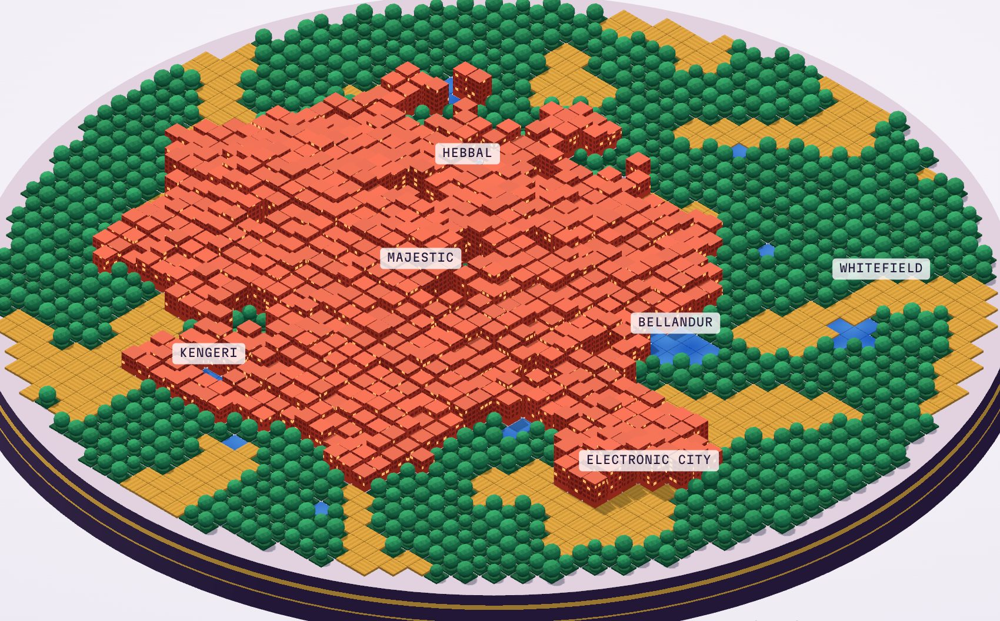
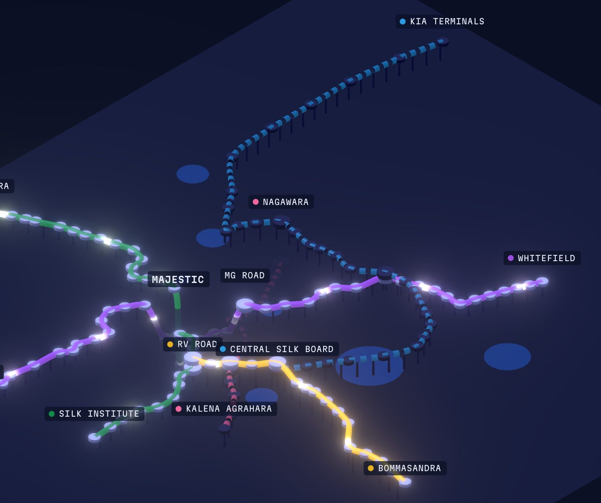
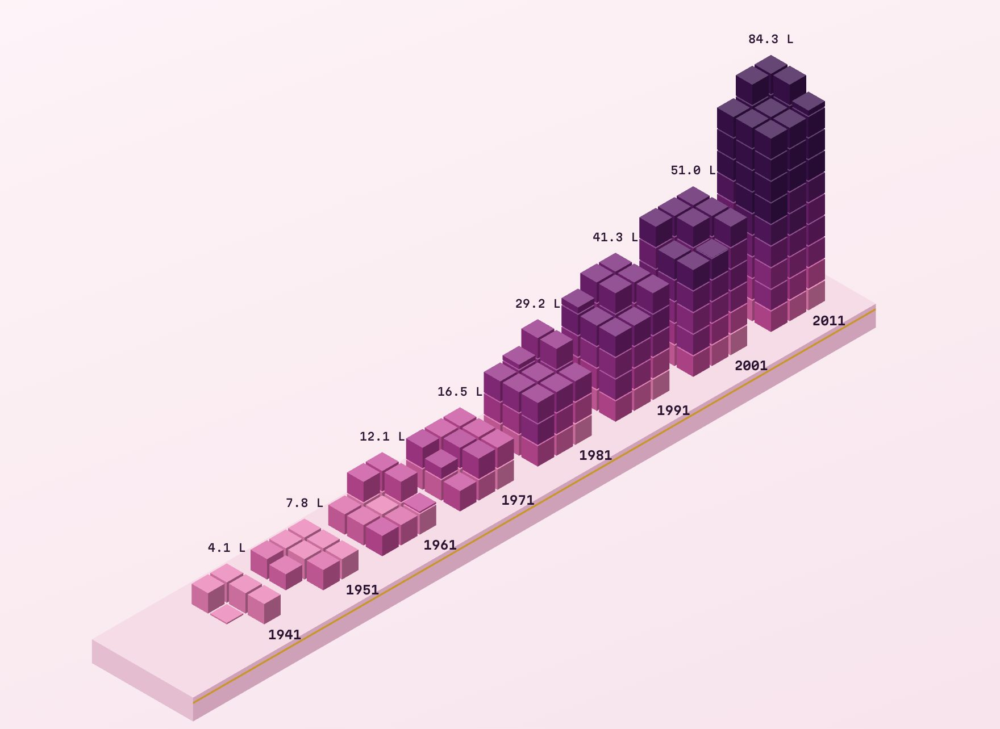
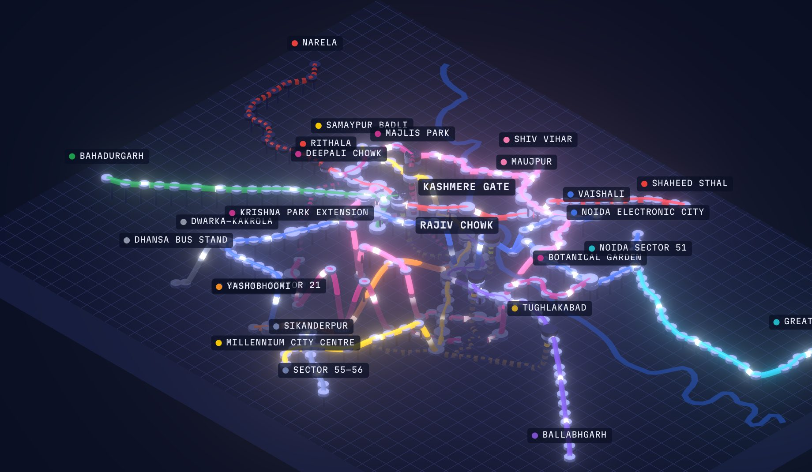

ಬೆಂಗಳೂರುBengaluru, in isometric
Four data pieces about one city: the trees and lakes it paved over, the metro it built above and below its streets, the two monsoons that water it, and the people who came. Each has its own colourway, drawn from kumkum, Mysore silk, tabebuia blossom and the metro's own line colours. A companion map gives Delhi's metro the same layered treatment.

Concrete Tide
Land cover from 1973 to 2020. Built-up area went from 8% to 93%, and tree cover fell from 68% to 3%. The lakes froth over during the Bellandur years.
Open the diorama →
Namma Metro, Layered
Every opening since October 2011, on elevated viaducts and in tunnels seen through the city slab. 96 km and 83 stations today, with the Pink and Blue lines on the way. Scrub the timeline, hide lines, and switch tooltips, scene, tilt and thickness.
Ride the timeline →Monsoon Almanac
IMD normals for 1991–2020. 1,078 mm of rain a year, wettest in September, with the northeast monsoon keeping October wet and May out-raining June.
Read the almanac →
Lakhs of People
One cube per lakh. From 4 lakh in 1941 to 84 lakh in 2011, with every cube keeping the colour of the decade that added it.
Trace the layers →
Delhi Metro, Layered
The Namma Metro treatment at Delhi's scale: 275 stations and about 383 km across Delhi, Noida and Gurugram since December 2002, with the Yamuna for bearings and six Phase 4 corridors dashed.
Explore Delhi →